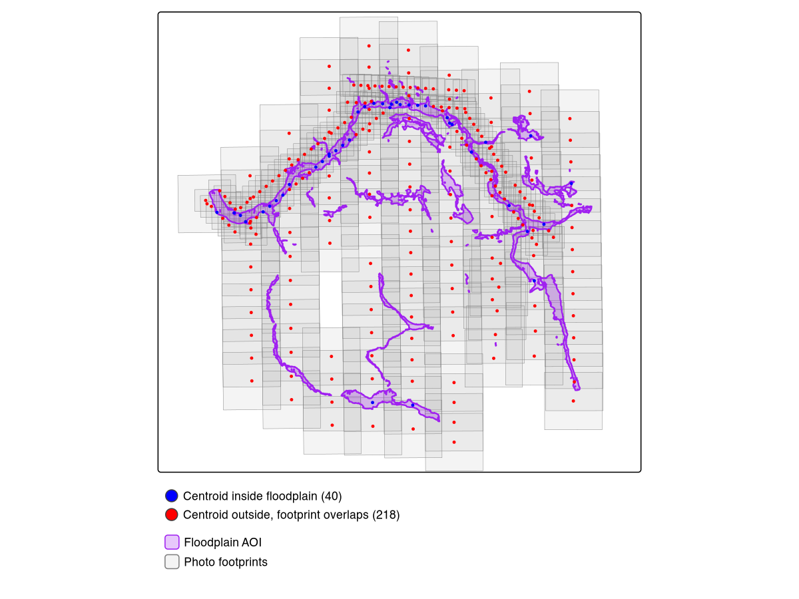
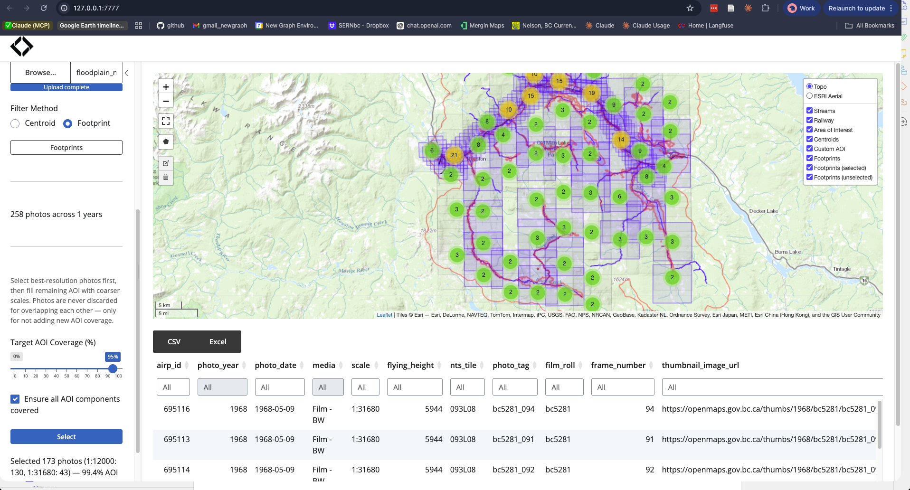
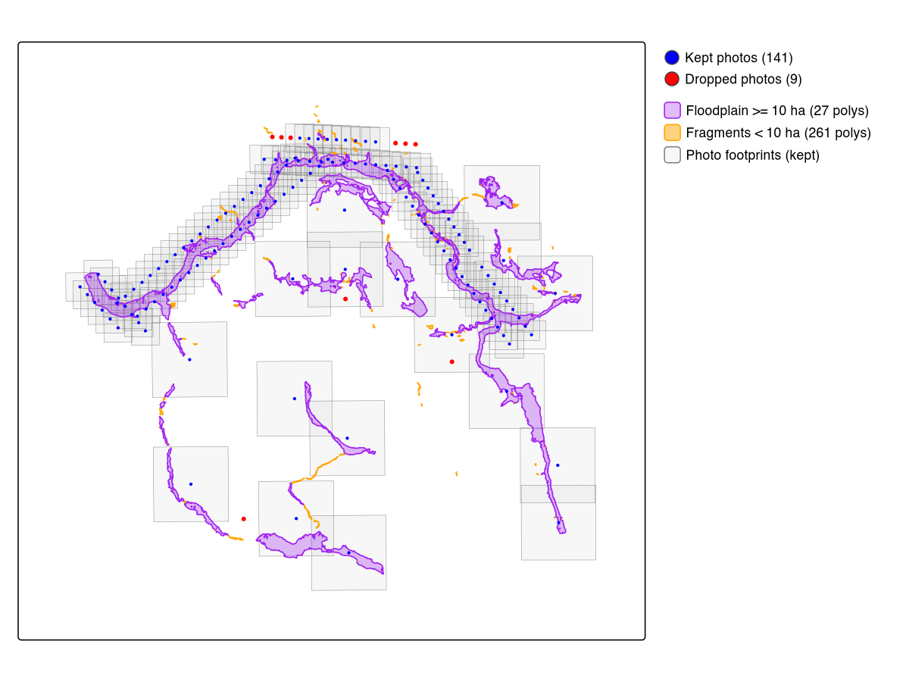

Selecting 1968 Airphotos for the Neexdzii Kwah Floodplain
Source:vignettes/neexdzii-kwah-1968.Rmd
neexdzii-kwah-1968.RmdThis vignette walks through a real photo selection for the Neexdzii Kwah (Upper Bulkley River) watershed in northwest BC. The goal: find every available 1968 airphoto covering the modelled coho floodplain, so we can understand what the riparian zone looked like before decades of land use change. Was it rangeland? Old growth cottonwood forest? Wetland complex? The airphotos are the ground truth.
The two-tier AOI
diggs uses a two-tier area of interest:
Watershed window — configured in
data-raw/cache_data.Rbefore the app starts. This defines the regional extent: which photo centroids get downloaded from the BC Data Catalogue and cached locally. For Neexdzii Kwah, that’s 9,388 centroids spanning 1963–2019.Floodplain refinement — a custom AOI uploaded or drawn inside the app. This narrows the selection to just the photos that cover your actual study area. Here, that’s the 123.5 km2 coho floodplain delineated by flooded.
The watershed window is broad (you only run it once). The floodplain refinement is precise (you iterate on it as your analysis evolves).
Delineate the floodplain
The floodplain AOI comes from flooded::fl_valley_confine()
— a valley confinement algorithm that uses a DEM, slope raster, stream
network, and precipitation to model where water can spread
laterally.
The script data-raw/vignette_neexdzii.R runs this
pipeline:
library(flooded)
# Query coho streams (order >= 4) from bcfishpass
conn <- DBI::dbConnect(RPostgres::Postgres(),
host = "localhost", port = 63333,
dbname = "bcfishpass", user = "newgraph"
)
streams <- sf::st_read(conn, query = sql) |> sf::st_zm(drop = TRUE)
# 1,165 segments across 20 named streams
# Rasterize precipitation (mean annual precip from upstream area)
precip_r <- fl_stream_rasterize(streams, dem, field = "map_upstream")
# Run VCA
valleys <- fl_valley_confine(
dem, streams,
field = "upstream_area_ha",
slope = slope,
slope_threshold = 9,
max_width = 2000,
cost_threshold = 2500,
flood_factor = 6,
precip = precip_r,
size_threshold = 5000,
hole_threshold = 2500
)
# Polygonize and save as GeoJSON for diggs
valleys_poly <- fl_valley_poly(valleys)
sf::st_write(sf::st_transform(valleys_poly, 4326),
"data/floodplain_neexdzii_co_4th_order.geojson"
)This produces a single polygon covering 123.5 km2 of modelled floodplain along 4th+ order coho streams.
Cache the watershed data
Before launching diggs, run data-raw/cache_data.R to
download reference layers and photo centroids from the BC Data
Catalogue. The script is parameterized by blk (blue line
key) and drm (downstream route measure):
# In data-raw/cache_data.R:
blk <- 360873822 # Bulkley River
drm <- 166030.4 # Neexdzii Kwa / Wedzin Kwa confluence
source("data-raw/cache_data.R")
# Caches 9,388 photo centroids (1963-2019), streams, railways, NTS gridWhy footprint filtering matters
Floodplains are narrow linear features. A photo centroid can land
outside the floodplain while the actual photo coverage — the footprint —
extends across it. This is the difference between fly_filter(method = "centroid")
and fly_filter(method = "footprint"):
| Method | 1968 photos found | What it checks |
|---|---|---|
| Centroid | 40 | Centre point falls inside AOI |
| Footprint | 258 | Estimated photo rectangle overlaps AOI |
Centroid filtering misses 85% of the useful photos. The 218 “extra” photos have centres outside the floodplain but their coverage extends across it — exactly the photos you need for edge-to-edge coverage of a narrow valley bottom.
Figure @ref(fig:footprint-map) shows this visually. Blue dots are centroids that land inside the floodplain. Red dots are centroids outside it whose footprints (grey rectangles) still overlap.

Centroid vs footprint filtering. Blue: centroids inside floodplain (40). Red: centroids outside whose footprints overlap (218). Purple: modelled floodplain. Grey: estimated photo footprints.
Launch diggs and select photos
diggs::run_app()In the app:
- Switch AOI mode to Custom (draw or upload)
- Upload
data/floodplain_neexdzii_co_4th_order.geojson - Set Filter Method to Footprint
- Set year range to 1968–1968
- Click Select to run resolution-prioritized selection
- Click Download CSV to export
Coverage target and component coverage
Footprint filtering finds 258 photos whose coverage overlaps the floodplain (vs just 40 by centroid — see Figure @ref(fig:footprint-map)). The priority selection algorithm then picks which of those 258 to actually order: all finest-scale photos first, then backfilling remaining AOI gaps with coarser scales until the coverage target is met.
At the default 95% coverage target, the selection returns 148 photos:
| Scale | Photos | Resolution |
|---|---|---|
| 1:12,000 | 130 | High — individual trees visible |
| 1:31,680 | 18 | Medium — fills gaps between fine-scale coverage |
The 1:12,000 photos are the priority — at this scale you can identify cottonwood stands, wetland boundaries, side channel morphology, and agricultural clearing patterns. Only 18 coarse-scale photos are needed to reach 97.7% AOI coverage.
sel <- read.csv("data/photo_selection_neexdzii_1968.csv")
table(sel$scale)
# 1:12000 1:31680
# 130 18The last few percent of coverage is expensive. Pushing from 95% to 100% requires 101 additional coarse-scale photos — all 1:31,680 — to fill tiny gaps between the fine-scale footprints. The 130 priority 1:12,000 photos are the same at every target:
| Target | Photos | Coverage | 1:12,000 | 1:31,680 |
|---|---|---|---|---|
| 95% | 148 | 97.7% | 130 | 18 |
| 100% | 249 | 100.0% | 130 | 119 |
| 90% | 144 | 94.3% | 130 | 14 |
| 85% | 142 | 91.8% | 130 | 12 |
However, the 95% target optimizes total area and can leave entire stream reaches uncovered — Buck Creek’s floodplain segments are small relative to the total AOI, so the algorithm skips them. Enable Ensure all AOI components covered to guarantee at least one photo on every disconnected floodplain polygon before optimizing for area. This adds ~25 photos (173 vs 148) but plugs the blind spots — far cheaper than pushing to 100% (249 photos). Figure @ref(fig:ensure-components) shows the result.

With component coverage enabled: 173 photos at 99.4% coverage. Blue footprints are selected, grey are unselected. Every floodplain polygon has at least one photo — no blind spots on Buck Creek or other isolated segments.
Pruning floodplain fragments
The VCA produces 288 polygon fragments, but most are tiny artifacts on upper tributaries — 214 are under 1 ha. These isolated pockets on streams like Foxy Creek and upper Crow Creek expand the analysis extent for negligible floodplain area. Combined with the 95% coverage target, dropping fragments under 10 ha removes 261 of 288 polygons while only reducing the selection from 148 to 141:
| Min area filter | Polygons kept | Photos (95%) | Dropped |
|---|---|---|---|
| None (raw) | 288 | 148 | — |
| >= 1 ha | 74 | 144 | 4 |
| >= 5 ha | 45 | 142 | 6 |
| >= 10 ha | 27 | 141 | 7 |
| >= 50 ha | 15 | 139 | 9 |
The 95% target already handles most edge trimming — fragment pruning complements it but doesn’t stack dramatically. The dropped photos all land on the periphery; the core riverscape coverage stays intact (Figure @ref(fig:pruned-map)).

Fragment pruning at 95% coverage target. Purple: floodplain >= 10 ha (27 polys). Orange: fragments < 10 ha (261 polys). Blue: kept photos (141). Red: dropped photos (9). Grey: footprints for kept set.
This pruning is a stopgap — a simple area threshold doesn’t account for network position. A fragment between two large floodplain polygons should be kept regardless of size, while an isolated pocket on upper Foxy Creek should be dropped even if it’s 15 ha. Network-aware pruning that snaps polygons to the stream network and prunes based on connectivity rather than area alone would be a more principled approach.
What comes next
Order the photos from the BC Air Photo Warehouse, scan or georeference them, then compare against modern satellite imagery from drift to quantify land cover change within the floodplain. The combination answers: what changed, where, and when — the foundation for restoration prioritization.